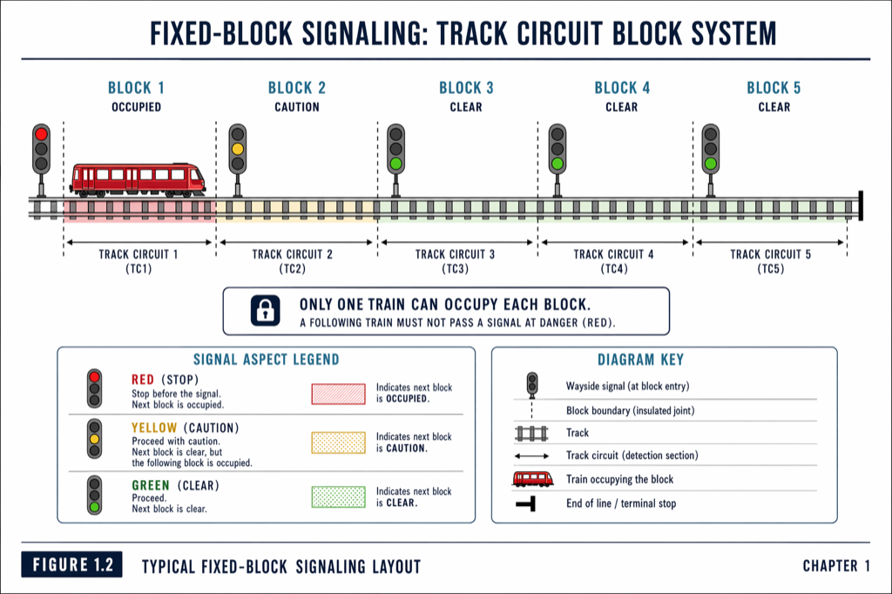
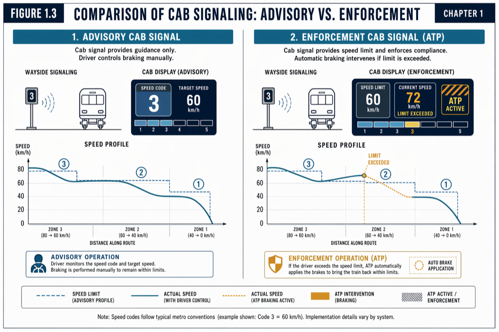
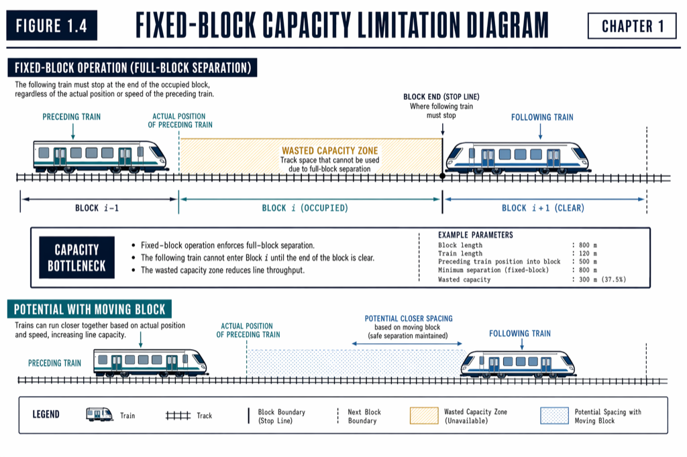
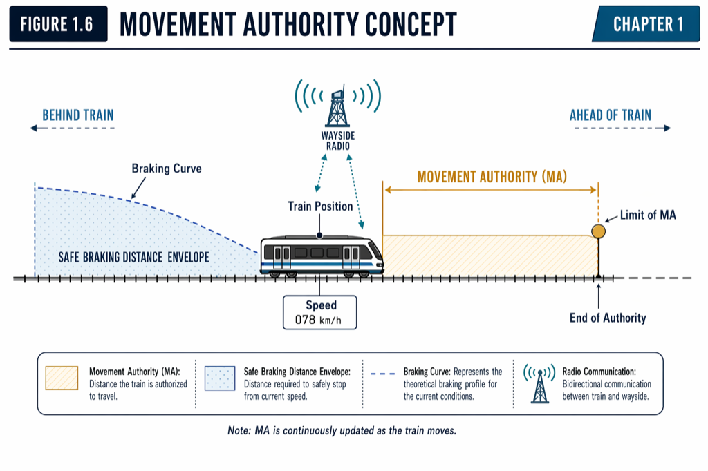
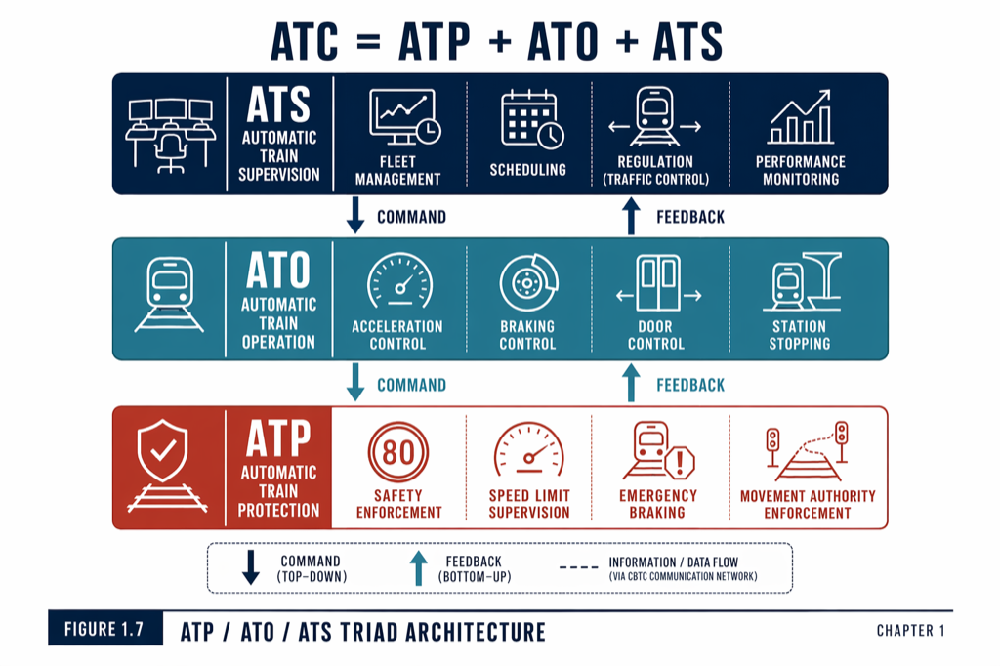
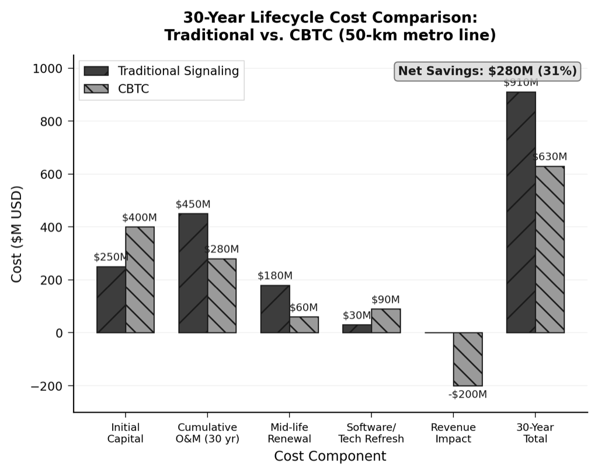

Vol 1 · Chapter 01
The Evolution of Train Control

Fig 1.1 150-Year Evolution Timeline

Fig 1.2 Typical Fixed-Block Signaling Layout

Fig 1.3 Cab Signaling — Advisory vs. Enforcement

Fig 1.4 Fixed-Block Capacity Limitation

Fig 1.5 Fixed-Block vs. Moving-Block Principle

Fig 1.6 Movement Authority Concept

Fig 1.7 ATC = ATP + ATO + ATS — Triad Architecture

Fig 1.8 NYC L-Line Capacity Gain After CBTC

Fig 1.9 Lifecycle Cost Profile — CBTC vs. Conventional